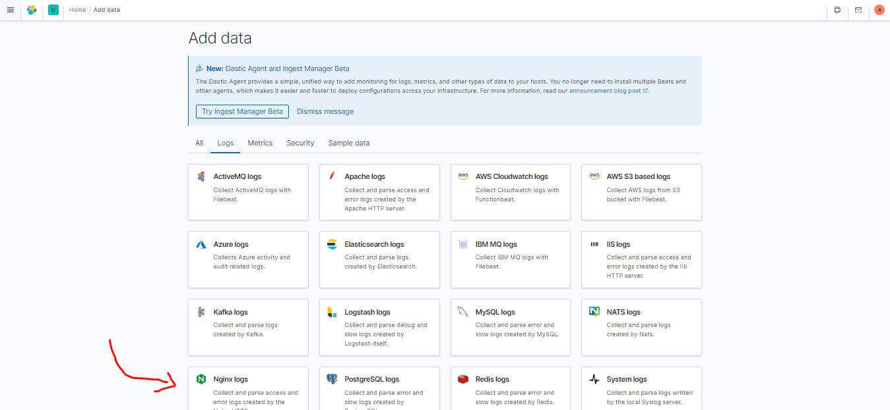
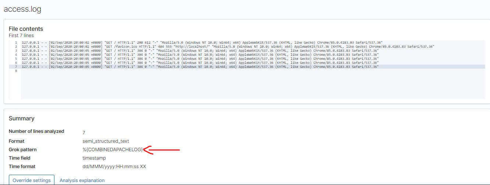
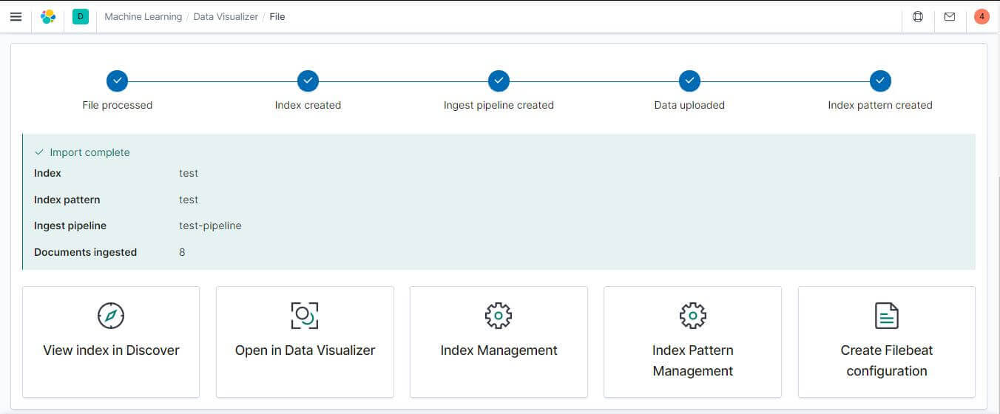
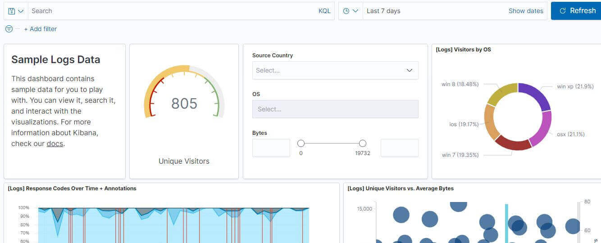
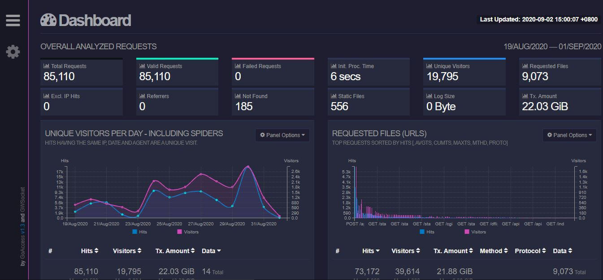
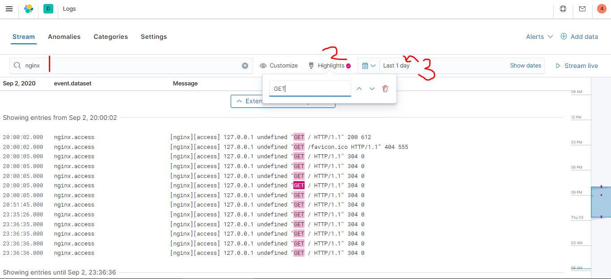

這篇文章會示範如何安裝並使用 Filebeat 傳送 Nginx Access Log 到 Elasticsearch 中，並使用 Kibana 即時監看相關資料，Filebeat 深入理解這篇文章則會深入的去介紹 Log 與 Filebeat 在實際運用上的細節、基礎概念及相關配置教學，本篇文章將著重在 Filebeat 在收集 Log 上的運用。
Logging 簡介
目前蒐集資料到 Elasticsearch 的方法有兩種
- Logstash: Java Base，還沒跑服務就需要吃資源，可負責處理 Log 格式
- Beats: Go Base，需要資源較少效能較好
為什麼 log 很重要?
- 監測應用程式
- 安全性分析
- 問題排解
解決的痛點:
- 不同的 Log 會有不同的格式
- 需要專業知識才讀得懂
- 有好幾種 log 的來源
- 需要產出不同格式的分析
Beats
Beats 可以安裝在 server 上協助傳送資訊到 Elasticsearch 或 Logstash，除了這次要用到的 Filebeat 以外還有一堆很厲害的 beat 系列工具，例如 Metricbeat 收集 system loading 還有 Packetbeat 可以收集網路封包。
Nginx Log 蒐集
主要步驟有以下三個
建立服務
- 規格都挑喜歡的選就可以了，我是選 GCP 位置台灣 IO 優先
- 開好之後記得下載帳號跟密碼，之後要打資料到 kibana 的配置檔中會用到
安裝 filebeat 打 log 資料到 Elasticsearch
- 第一次使用可以先加入 Sample Data 來試用
- 教學範例中可以看到常見的 Apache、Nginx、Docker 可以說該有的都有
從 Kibana 的介面中監看成果

安裝 Filebeat
如果是 Windows 官方的 Quick Start 不用試了，因為 system module 跑不起來，所以我們要先停用:
./filebeat modules disable system
接下來就挑選 Nginx 的範例來嘗試，首先當然要下載 nginx，下載解壓縮後到目錄直接 start nginx 然後瀏覽器瀏覽 localhost 先來產生一下 access.log，我的 Log 位置會在 C:\nginx-1.18.0\logs。
Filebeat 的安裝使用步驟如下
- 下載 Filebeat 解壓縮
./filebeat modules enable nginx啟用模組- 找到
filebeat.yml中的 cloud.id 及 cloud.auth 並填入正確資料 - 找到
modules.d\nginx.yml中的var.paths: ["c:\\nginx-1.18.0\\logs\\access.log*"] ./filebeat test config -e看看有沒有打錯- ./filebeat setup
- ./filebeat -e
如果有其他更特殊的 Log，也可以透過直接上傳 log 檔 (CSV, NDJSON, log) 到 kibana，然後人工稍微針對機器學習辨識出來的 Grok Pattern 結果進行編輯即可。

透過剛剛機器學習的模組會幫我們分析 Log 的組成，並且也有幫我們產生 YML 的內容的功能，方便我們去寫剛剛提到的 filebeat.yml。

Kibana 監看 Log
Kibana 就是一個管理的 GUI，載入 Sample web logs 範例資料後就可以看到華麗的 Dashboard，如果看到這裡覺得還是很複雜，如果剛好 Server 又是 Nginx 的也很推薦使用 GoAccess 這套工具。
| Kibana Dashboard | GoAccess Dashboard |
|---|---|
 |  |
這次目標是看 Log 有沒有進來，所以到 Kibana 選單中 Observability 的 logs，有幾個功能還蠻方便的:
- 關鍵字搜尋
- 關鍵字 highlight
- 時段篩選
接著記得開啟 stream live，並且重複瀏覽幾次 localhost 看看我們剛剛 Nginx Access Log 有沒有自動匯入，如果看到如下圖，就恭喜大大設定成功，完成了這次 Quick Start 的任務。

喜歡這篇文章，請幫忙拍拍手喔 🤣